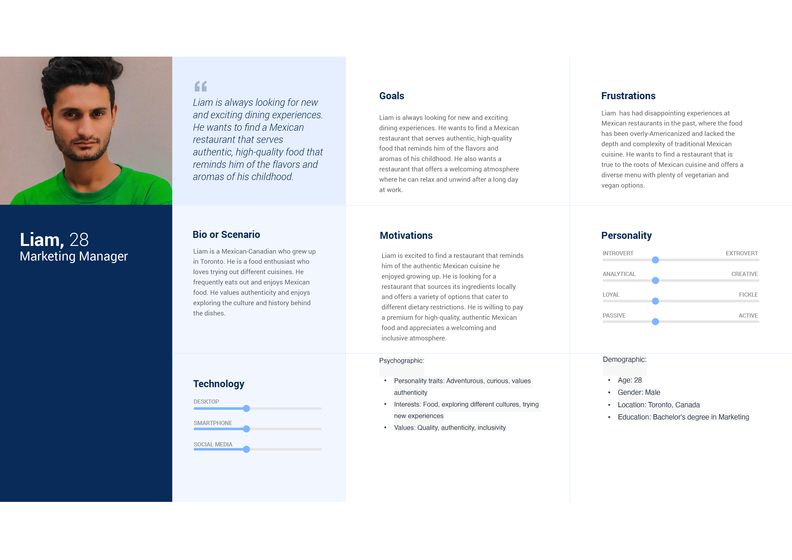
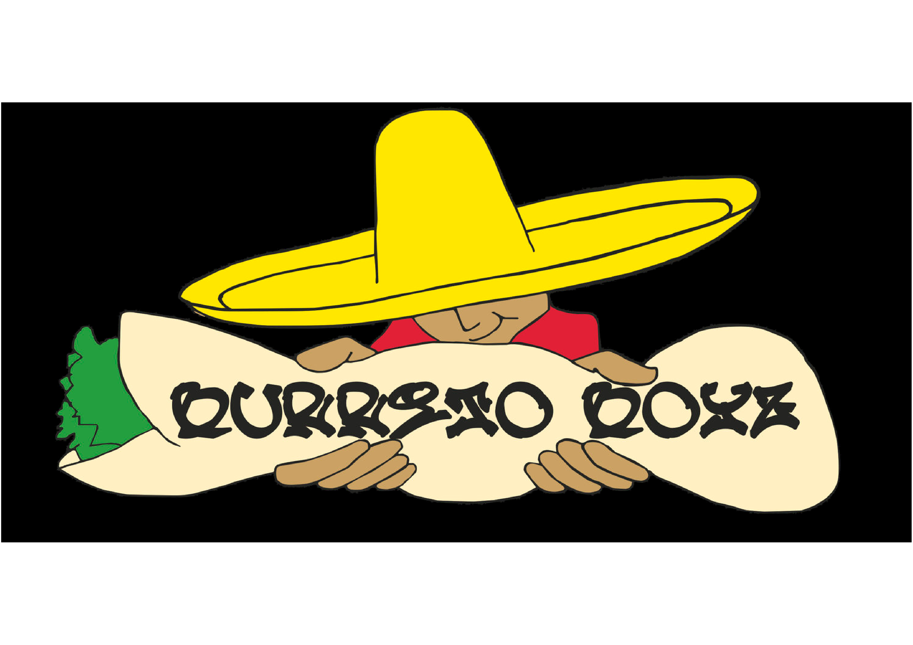
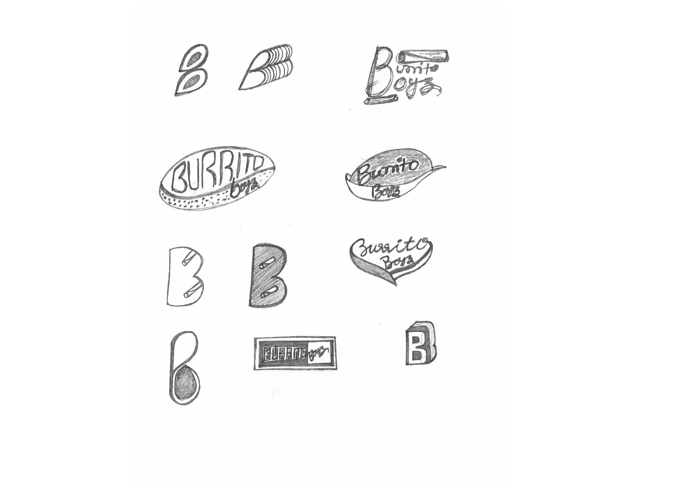
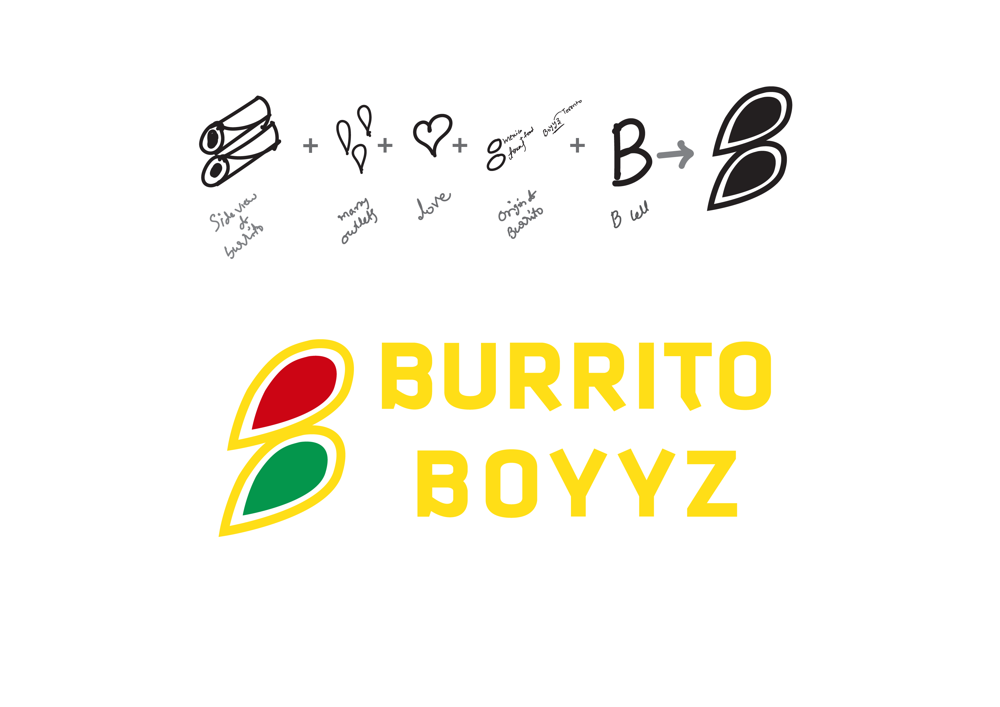
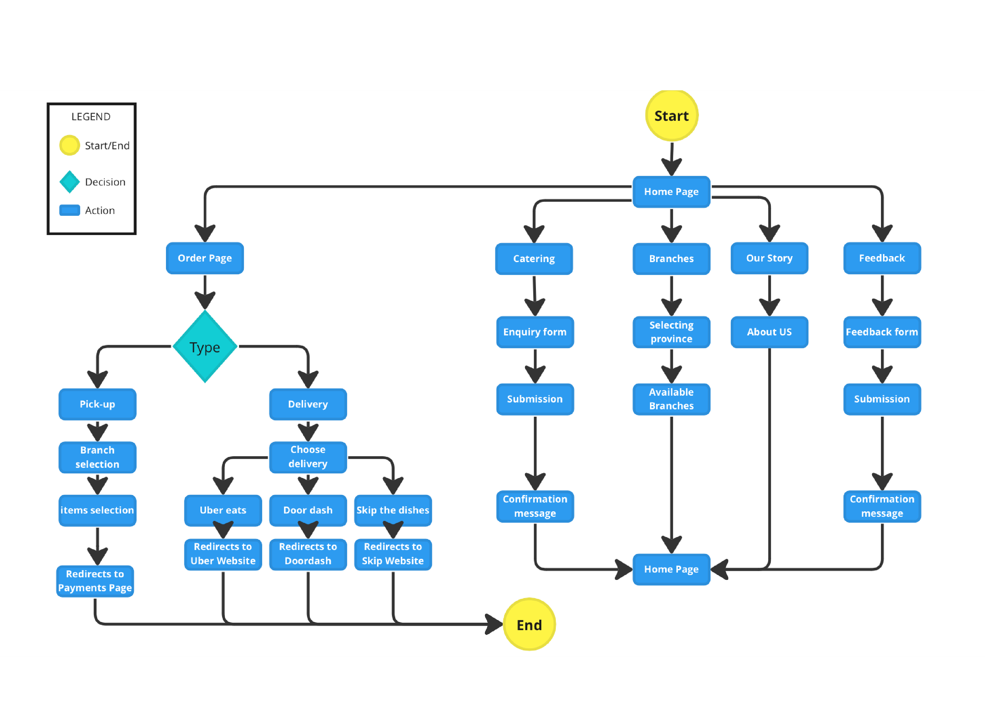
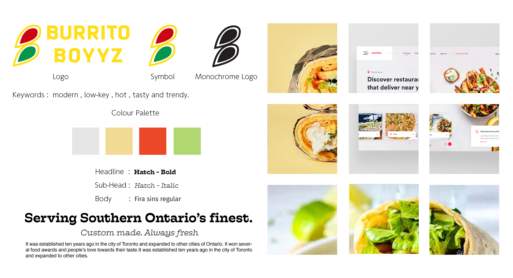

Redesigning Restaurant Website

I recreated the Burrito Boyz restaurant website as a clickable prototype, incorporating a revamped visual design with updated colors and typography for a cohesive and appealing look. The user interface was fine-tuned to ensure easy navigation on both desktop and mobile devices. The menu section received a special focus, featuring enticing images and organized categories to streamline the ordering process for a seamless user experience.
Tools : Figma,Miro,Illustrator
I selected one of the best burrito food chain restaurant which located
in 20 cities with more than 50 outlets in the Ontario, Canada. This
serves dine-in and takeaway food of mainly Texas - Mexican food
burrito and along with other similar cuisine. Its name is
Bad Typography
Not suitable for all mediums
Not apted for small size placements
Changed black-and-white logo which is used as icon in mobile
version into grey, as I understood that 100% black not works in
UI.
Changed hamburger menu colour too.
Added confirmation pages/pop-up windows for form submissions.
Altered text formatting for paragraph texting.
BURRITO BOYZ
It was established ten years ago in the city of Toronto and expanded
to other cities of Ontario. It won several food awards and people’s
love towards their taste.
User Persona
Current Logo
Observations:
Logo Sketches
New Logo
User Flow
Mood Board
Usability Testing
After testing I have done these changes.